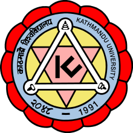

About me
I am Ansu Singh, and I live in Canberra, Australia.
Professionally, I am a software engineer and likes coding in system programming language such as C, C++.
Besides coding I like walking in bush, meditate, watch cricket, and play ping pong.
I am Ansu Singh, and I live in Canberra, Australia.
Professionally, I am a software engineer and likes coding in system programming language such as C, C++.
Besides coding I like walking in bush, meditate, watch cricket, and play ping pong.
SeeingmachinesEmbedded Software EngineerMarch 2021 - Present In my role as an embedded software engineer, I'm actively engaged in developing Driver Monitoring Systems (DMS) software components and delivering them to tier 1 automotive companies, e.g. Magna. My daily responsibilities encompass a diverse range of tasks, including but not limited to:
|
|
General Dynamics Mission Systems AustraliaSoftware EngineerApril 2019 - March 2021 In my tenure at General Dynamics Mission System Australia (GDMSA), I involved in a diverse range of projects aimed at processing video streams for PED applications using state-of-the-art technology such as HEVC. C++ was the primary implementation language along with Python for testing, Highlights of my experience include:
|
|

|
Ocular RoboticsInternNovember 2016 - November 2017 I was taking an active role in a research project of developing a prototype of thermoelastic stress analysis (TSA) using the state-of-the-art mirror pointing device from Ocular robotics. The project was in collaboration with Defence Science Technology Group (DSTG) and University of Technology, Sydney (UTS). Following were my responsibilities and achievements in this role:
|
|  |
Kathmandu UniversityLecturerAugust 2013 - January 2014 I gave lectures to undergraduate students on various subjects such as digital signal process (DSP), Control Systems, and so on. I also conducted lab sessions on subjects like Electrical Circuits, Digital signal processing. |
University of Technology Sydney (UTS), AustraliaDoctorate of Philosophy (2015-2019) Thesis Title: On Data-driven Modelling and Terminal Sliding Mode Control of Dynamic Systems with Applications download |
|
Chonbuk National University, South KoreaMaster of Electronics Engineering (2011-2013) |
Tribhuvan University, NepalBachelor of Electronics Engineering (2003-2007) |